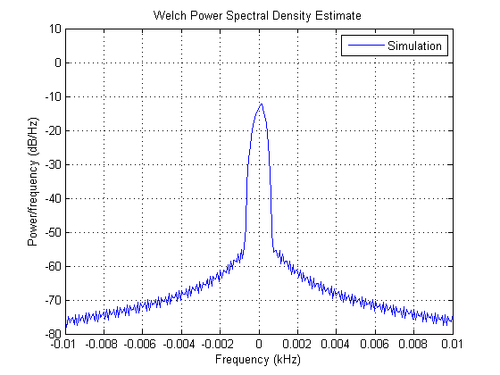
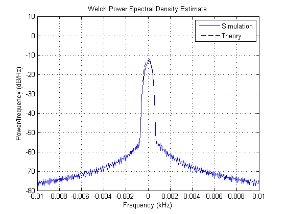
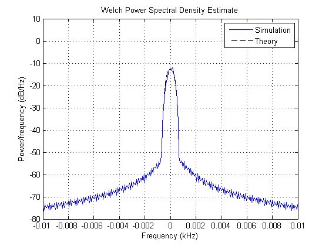
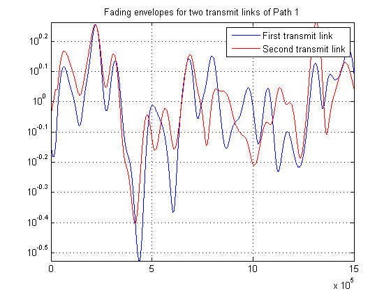
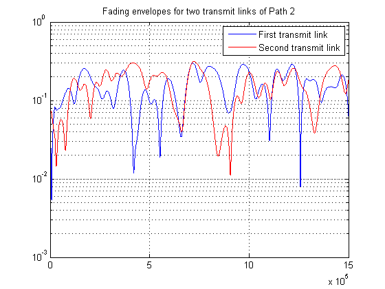

IEEE 802.16 Channel Models
This demo shows how to simulate multiple-input multiple-output (MIMO) multipath fading channels based on the IEEE® 802.16 channel models for fixed wireless applications. Two transmit antennas and one receive antennas are used. The demo uses the MIMO multipath fading channel and the rounded Doppler spectrum objects.
Contents
IEEE 802.16 Channel Models: Overview
The IEEE 802.16 channel models [ 1 ] for fixed wireless applications are proposed for scenarios where the cell radius is less than 10 km, the directional antennas at the receiver are installed under-the-eaves/windows or on the rooftop, and the base station (BS) antennas are 15 to 40 m in height. The channel models comprise a set of path loss models including shadowing (suburban, urban) and a multipath fading model, which describes the multipath delay profile, the K-factor distribution, and the Doppler spectrum. The antenna gain reduction factor, due to the use of directional antennas, is also characterized.
The modified Stanford University Interim (SUI) channel models consist of a set of 6 typical channels used to simulate the IEEE 802.16 channel models (more specifically the 2004 version of the standard for fixed wireless applications). They are proposed for a scenario where: the cell size is 7 km, the BS antenna height is 30 m, the receive antenna height is 6 m, the BS antenna beamwidth is 120 degrees, the receive antenna is either omnidirectional or directional (30 degrees), and only vertical polarization is used.
Each modified SUI channel model has three taps. Each tap is characterized by a relative delay (with respect to the first path delay), a relative power, a Rician K-factor, and a maximum Doppler shift. Two sets of relative powers are specified for each channel model: one for an omnidirectional antenna, and one for a 30 degrees directional antenna. Furthermore, for each set of relative powers, two different K-factors are specified, a K-factor for 90% cell coverage, and a K-factor for 75% cell coverage. Hence, each of the 6 modified SUI channel models comprises parameters for four distinct scenarios. Each modified SUI channel model is further assigned an antenna correlation, defined as the envelope correlation coefficient between signals received at different antenna elements.
Initialization of Simulation-Specific Parameters
The simulation sampling rate is specified, and kept the same for the remainder of the demo. The input to the channel simulator is oversampled by a factor of four.
S = RandStream('swb2712', 'Seed', 12345); % Set a local random number stream M = 2; % Modulation order hModem = modem.pskmod(M); % 2-PSK modulator object Rsym = 10e3; % Input symbol rate Rbit = Rsym * log2(M); % Input bit rate Nos = 4; % Oversampling factor ts = (1/Rbit) / Nos; % Input sample period
Modified SUI-1 Channel Model
The code below constructs a MIMO channel object according to the modified SUI-1 channel model, for an omnidirectional antenna and 90% cell coverage.
The channel model has 3 paths: the first path is Rician while the remaining two are Rayleigh. Each path has a rounded Doppler spectrum for its diffuse component: the parameters are as specified in the default doppler.rounded object. While different maximum Doppler shifts are specified for each path in [ 1 ], we use the maximum value of the Doppler shifts for all paths.
We use 2 transmit antennas and 1 receive antenna. Similar to Appendix B of [ 1 ], the correlation coefficient between the two signals on each path is taken equal to the antenna correlation.
tau = [0 0.4 0.9]*1e-6; % Path delays, in seconds pdb = [0 -15 -20]; % Average path gains, in dB dop = doppler.rounded; % Doppler spectrum, with default parameters fd = 0.5; % Maximum Doppler shift for all paths (identical) Nt = 2; % Number of transmit antennas Nr = 1; % Number of receive antennas rho = 0.7; % Correlation coefficient = antenna correlation h = mimochan(Nt, Nr, ts, fd, tau, pdb); % MIMO channel object h.KFactor = 4; % Rician K-factor on first path h.DopplerSpectrum = dop; % Doppler spectrum of MIMO object h.TxCorrelationMatrix = toeplitz([1 rho]); % Transmit correlation matrix
The code below simulates the modified SUI-1 channel model.
% After each frame is processed, the channel is not reset: this is necessary % to preserve continuity across frames. h.ResetBeforeFiltering = 0; % This setting is needed to store the path gains. h.StorePathGains = 1; Nsamp = 1.5e6; % Total number of channel samples Nsamp_f = 1000; % Number of samples per frame Nframes = Nsamp/Nsamp_f; % Number of frames out = zeros(Nsamp, Nr); y1 = zeros(Nsamp, Nt); y2 = zeros(Nsamp, Nt); y3 = zeros(Nsamp, Nt); for iFrames = 1:Nframes inputSig = modulate(hModem, randi(S, [0 M-1], Nsamp_f, Nt)); idx = (1:Nsamp_f)+(iFrames-1)*Nsamp_f; out(idx,:) = filter(h, inputSig); for it = 1:Nt % For each transmit antenna, store gains of all three paths y1(idx,it) = h.PathGains(:,1,it,1); y2(idx,it) = h.PathGains(:,2,it,1); y3(idx,it) = h.PathGains(:,3,it,1); end end
The Doppler spectrum of the 1st link of the 2nd path is estimated from the complex path gains and plotted.
Hs = spectrum.welch('Hamming', Nsamp/5, 50); figure; psd(Hs, y2(:,1), 'Fs', 1/ts, 'SpectrumType', 'twosided', 'Centerdc', true) axis([-0.1/10 0.1/10 -80 10]); legend('Simulation');
The theoretical rounded Doppler spectrum is overlaid to the estimated Doppler spectrum. We observe a good fit between both.
f = -fd: 0.01 :fd; a = [1 -1.72 0.785]; % Parameters of the rounded Doppler spectrum Sd = 1/(2*fd*(a(1)+a(2)/3+a(3)/5)) * ( a(1) + a(2)*(f/fd).^2 + a(3)*(f/fd).^4 ); Sd = Sd * 10^(-15/10); % Scaling by average path power hold on; plot(f(Sd>0)/1e3, 10*log10(Sd(Sd>0)), 'k--'); legend('Simulation', 'Theory');
The Doppler spectrum for the 2nd link of the 2nd path is also estimated and compared to the theoretical spectrum. We also observe a good fit between both.
figure; psd(Hs, y2(:,2), 'Fs', 1/ts, 'SpectrumType', 'twosided', 'Centerdc', true) axis([-0.1/10 0.1/10 -80 10]); legend('Simulation'); hold on; plot(f(Sd>0)/1e3, 10*log10(Sd(Sd>0)), 'k--'); legend('Simulation', 'Theory');
For each path, we plot the fading envelope waveforms of both transmit links. We can observe a correlation between the fading envelopes
figure; semilogy(abs(y1(:,1)),'b'); hold on; grid on; semilogy(abs(y1(:,2)),'r'); legend('First transmit link', 'Second transmit link'); title('Fading envelopes for two transmit links of Path 1'); figure; semilogy(abs(y2(:,1)),'b'); hold on; grid on; semilogy(abs(y2(:,2)),'r'); legend('First transmit link', 'Second transmit link'); title('Fading envelopes for two transmit links of Path 2'); figure; semilogy(abs(y3(:,1)),'b'); hold on; grid on; semilogy(abs(y3(:,2)),'r'); legend('First transmit link', 'Second transmit link'); title('Fading envelopes for two transmit links of Path 3'); 

We compute the correlation matrices for each path. We observe that they show a match with the theoretical values (compare with h.TxCorrelationMatrix specified earlier). Note that corrcoef function estimate can be improved if Nsamp is increased.
TxCorrMatrixPath1 = corrcoef(y1(:,1),y1(:,2)).' TxCorrMatrixPath2 = corrcoef(y2(:,1),y2(:,2)).' TxCorrMatrixPath3 = corrcoef(y3(:,1),y3(:,2)).'
TxCorrMatrixPath1 = 1.0000 0.6950 + 0.1210i 0.6950 - 0.1210i 1.0000 TxCorrMatrixPath2 = 1.0000 0.6590 - 0.1296i 0.6590 + 0.1296i 1.0000 TxCorrMatrixPath3 = 1.0000 0.6553 - 0.1275i 0.6553 + 0.1275i 1.0000
Selected Bibliography
- IEEE 802.16 Broadband Wireless Access Working Group, "Channel models for fixed wireless applications", IEEE 802.16a-03/01, 2003-06-27.